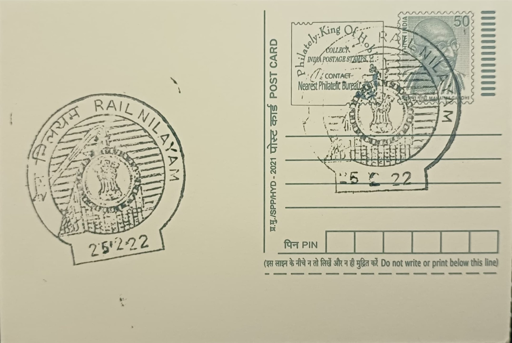

Railway Engine
రైల్వే ఇంజిన్


The static and displayed railway engines associated with Hyderabad's Rail Nilayam locality trace their origin to the founding of the Nizam's Guaranteed State Railway, a company incorporated in 1879 to build a line from Hyderabad city outward under a financial guarantee extended by the princely state of Hyderabad rather than by British India directly. Construction of the original metre-gauge route from Secunderabad toward Wadi began soon after, giving the Nizam's dominions one of the earliest railway networks among India's princely states and setting the pattern for the region's rail-linked identity that the pictorial cancellation at Rail Nilayam SO now commemorates.
The engine motif belongs to the broader category of institutional and technological heritage rather than religious or natural subjects, and its significance rests on Hyderabad's standing as the administrative seat of one of colonial India's most railway-active princely states. The Nizam's Guaranteed State Railway grew through the late nineteenth and early twentieth centuries to operate well over a hundred locomotives along with hundreds of coaches and thousands of wagons by the 1930s, before being merged with the Hyderabad-Godavari Valley Railway and finally absorbed into nationalised Indian Railways around 1951. That lineage feeds directly into South Central Railway, whose zonal headquarters, Rail Nilayam, gives the post office its name and situates the engine imagery within a still-functioning administrative apparatus rather than a purely historical relic.
Rail Nilayam itself, the multi-storey headquarters building in Secunderabad from which the post office takes its identity, was constructed and opened in 1972 to house the General Manager's office and department heads overseeing the South Central Railway zone, and it also accommodates the Indian Railways Institute of Signal Engineering and Telecommunications, a centralised training establishment for signalling and telecommunication staff. The steam locomotives that inform the pictorial cancellation's imagery, however, harken to an earlier engineering era: British manufacturers such as Kitson and Company of Leeds and Dubs and Company of Glasgow supplied broad-gauge and metre-gauge engines to the Nizam's railway from the late 1800s onward, many fitted with then-modern features such as feed-water heaters and electric lighting for the royal and administrative rolling stock they hauled.
A particularly notable surviving example is the locomotive named Sir Alec, built in 1907 by Kitson and Company and preserved today as the centrepiece exhibit of the Rail Museum at Kacheguda railway station, itself completed in 1916 under the seventh Nizam, Mir Osman Ali Khan, as the original headquarters building of the Nizam's Guaranteed State Railway. The museum, housed within the same heritage complex, also displays the Nizam's restored Royal Saloon carriage alongside archival photographs, vintage signalling apparatus, and scale models of early engines and coaches, giving visitors a concentrated physical record of the transition from princely-state rail administration to the present zonal system centred on Rail Nilayam.
Opened in 2015 and substantially revamped in 2024, the roughly 250-square-metre Kacheguda museum is run directly by South Central Railway and supplements its indoor galleries with an outdoor display area featuring two air-conditioned metre-gauge coaches, formerly used on Rajasthan's 'Heritage on Wheels' circuit, set among landscaped seating under canopies near the station's reservation complex. Together with the Rail Nilayam headquarters that anchors the postal name, this network of preserved engines, carriages and archival material is maintained as an active public attraction rather than a closed depot, drawing railway enthusiasts and school groups who come specifically to see how Hyderabad's Nizam-era locomotives connect to the zonal railway administration still headquartered a short distance away.
| Date of Introduction | February 11, 1976 |
|---|---|
| Address | Sub Postmaster, |
| Rail Nilayam SO, | |
| Hyderabad (dt.), Telangana - 500003. |